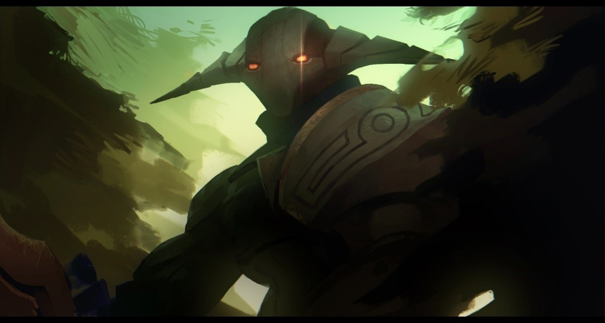
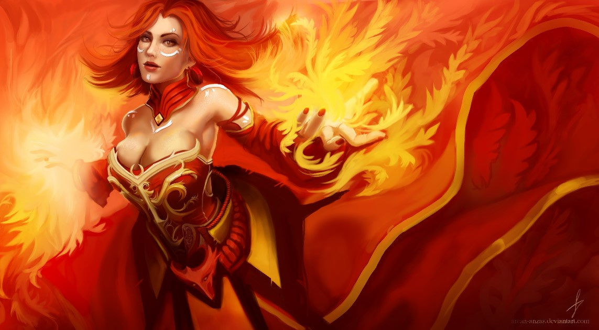
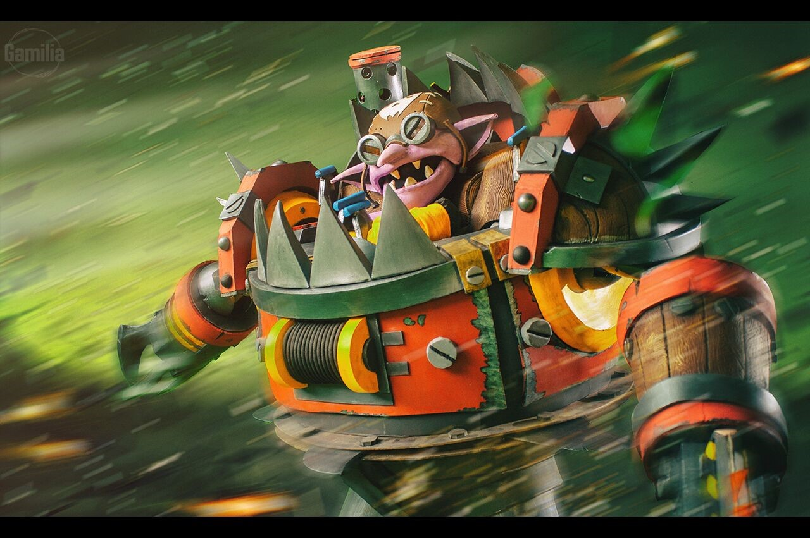

Pernah ga kalian pake Drow Ranger yang punya banyak armor tapi tiba-tiba modar di jedar sama Zeus ataupun Laguna Blade dari Lina? Atau pernah ga pake pudge yang hp nya 5000 tetapi modar sama Whirling Death dari Timbersaw? Pernah?
Nah, maka dari itu kita harus tau tipe damage di DOTA 2 agar skill kita bisa meningkat dan tentunya bisa push rank sampai keluar dari rank Herald (canda Herald ☹). Jadi kalian bisa tahu item apa yang harus dibeli/hero apa yang harus di pick dan damage apa yang harus diwaspadai dari hero-hero musuh.
1. Physical Damage
Ini adalah tipe damage yang paling umum di DOTA 2. Setiap Basic Attack hero DOTA 2 pasti bertipe Physical. Tapi jangan salah, beberapa skill hero DOTA 2 juga memiliki tipe Physical. Misalnya, Quill Spray milik Bristleback, Starbreaker milik Dawnbreaker, dan Boundless Strike milik Monkey King.
Tipe damage Physical ini bisa kalian kurangi dengan item armor, seperti Assault Cuirass, Medallion of Courage, dan Shiva’s Guard. Kalian juga bisa menggunakan item yang memiliki Damage Block seperti Vanguard. Item/skill Evasion, seperti Butterfly (35% miss chance) dan skill Blur (45% miss chance) milik Phantom Assassin juga membantu kalian untuk menghindar sepenuhnya dari damage Physical (skill tipe Physical tidak bisa miss). Cara lainnya yaitu menggunakan item/skill yang membuat kalian berada dalam keadaan Ethereal (imun sepenuhnya dari damage tipe Physical), seperti Ghost Scepter, Ethereal Blade, atau skill Ghost Shroud milik Necrophos.
Nah, jika kalian pengen damage Physical kalian tambah mantap, kalian bisa membeli item Reduce Armor seperti Desolator atau Assault Cuirass, ataupun skill Corrosive Haze milik Slardar. Ada juga skill yang meningkatkan Attack Damage, seperti Refraction milik Templar Assassin, Warpath milik Bristleback, atau God’s Strength milik Sven yang membuat satu map DOTA 2 bergetar (sakit kali cuy).
2. Magical Damage
Nah, tipe damage ini paling sering membuat kita modar dan bete karena biasanya Magical Damage itu sangat kuat, apalagi di early game. Damage tipe Magical ini sebagian besar berasal dari skill-skill hero, dan hampir semua hero di DOTA 2 (hampir ya woy jangan bully gua) memiliki skill bertipe Magic. Magical Damage ini biasanya memiliki scaling yang besar di early game dan lategame, dan akan menurun performanya seiring game berjalan. Beberapa skill dengan damage Magical yang besar pada skill level 1 yaitu Finger of Death dari Lion (600 dmg), Laguna Blade dari Lina (500 dmg), Sharpshooter milik Hoodwink (550 dmg), dan Epicenter milik Sand King (660 total dmg).
Gimana cara ngurangin damagenya woy biar ga sakit? Sabar cok. Pertama-tama, semua hero DOTA 2 memiliki Magic Resistance sebesar 25%. Nah, kita bisa beli item-item Magic Resistance seperti Hood of Defiance (20% Magic Resistance), Glimmer Cape (15% Magic Resistance, +45% jika diaktifkan). Beberapa Magic Resistance item/skill seperti Hood of Defiance akan memberikan tambahan Magic Absorb jika diaktifkan (325 Magical Damage absorb). Begitu pula dengan Flame Guard milik Ember Spirit (500 Magical Damage Absorb pada level max). Beberapa skill di DOTA juga menambahkan Magic Resistance. Misalnya Passive Skill Flesh Heap milik Pudge, Counterspell milik Anti-Mage, dan Active skill milik Oracle yaitu Fate’s Edict yang memberikan Magic Resistance sebesar 100% kepada target.
Terus gimana caranya biar Magic Damage kita makin sakit? Wah, kita harus berguru pada Gandalf bro, The Master of Magic. Hahaha, tenang bos. Ada beberapa item yang bisa kita gunakan untuk Amplify/menambah damage dari skill Magical Damage, misalnya Veil of Discord (+18% Spell Amplification) dan Kaya (+8% Spell Amplification). Ada juga skill yang mengurangi Magic Resistance, misalnya Ancient Seal milik Skywrath Mage (+45% Magic Damage pada level max), Ice Vortex milik Ancient Apparition (+24% Magic Damage pada level max). BTW, inget ga keadaan Ethereal? Itu lho, keadaan yang membuat kita imun sepenuhnya dari Physical Damage. Tapi eh tapi, Magic Damage yang diterima oleh hero dalam mode Ethereal akan lebih besar. Jadi, item seperti Ethereal Blade walau membuat musuh imun terhadap Physical Damage tapi mereka akan menerima +40% Magic Damage.
3. Pure Damage
Ini dia tipe damage yang terakhir di DOTA 2. Sesuai namanya, ‘Pure’ , tipe damage ini akan menembus segala Magic Resistance ataupun Physical Armor (wah, udah gila ya lu boy) dan akan mengakibatkan damage persis seperti pada deskripsi skillnya. Ini adalah damage langka di DOTA 2 dan hanya beberapa hero saja yang mempunyainya. Misalnya, Timber Chain dan Whirling Death milik Timbersaw atau Blood Rite dan Rupture milik Bloodseeker. Jadi, walau kalian punya 100 armor pun atau 80% Magic Resistance, tetap saja damagenya sama, tidak berkurang (dengan beberapa pengecualian, fufufu).
Lah, terus gimana cara ngadepinnya? Mau berbuat apapun percuma saja dong? Weh, santai bro. Salah satu mekanik DOTA 2, yaitu “Damage Reduction” adalah salah satu cara menghadapinya. Wah, apa itu? Damage Reduction adalah mekanik yang memungkinkan kita untuk mengurangi segala jenis damage (ya, semuanya. Gasalah kok). Contohnya? Ada Aphotic Shield milik Abaddon, Passive Skill Bristleback milik Bristleback yang akan mengurangi damage yang diterima Bristleback ketika diserang dari samping ataupun belakang, Spiked Carapace milik Nyx Assassin yang akan menghilangkan damage pertama yang ditujukan ke arah Nyx tetapi hanya berfungsi sekali untuk satu hero musuh (total 5 untuk musuh yang berbeda), Passive Skill Dispersion milik Spectre (max 20% Damage Reduction), dan masih banyak lagi bro. Jadi, banyak hero yang bisa mengurangi damage Pure yang kimprit ini. Kalau pake item bisa ga bos? Bisa bos, beli saja item seperti Aeon Disk. Item ini akan aktif saat nyawa kalian kurang dari 70% karena diserang hero musuh, dan saat aktif selama 2,5 detik kalian akan imun terhadap SEMUA damage alias 100% Damage Reduction tetapi kalian juga tidak akan bisa menghasilkan damage apapun. Jadi, ketika Aeon Disk aktif kalian tidak usah menyerang musuh karena tidak akan ada damagenya.
Kalau menambah/Amplify damage Pure bisa tidak? Jelas bisa gan, item dan skill yang memiliki Damage/Spell Amplification bisa menambah damage Pure kita. Misalnya, Bloodstone (+8% Spell Amplification) atau talent lvl 10 Tinker +8% Spell Amplification. Ada juga Bloodrage milik Bloodseeker yang akan memberikan target Spell Amplification
Jadi, itulah Tipe Damage di DOTA 2. Memang panjang dan agak ribet penjelasannya, tapi jika kalian memahaminya dan tahu kapan harus beli item ini itu, atau skill ini itu berdasarkan tipe damage, dijamin kalian akan menang lebih banyak dan MMR kalian akan meningkat (keluar dari neraka Herald… fufufu).
References
DOTA 2 – Last Played and visited 05 June 2021 on patch 7.29d
dota2.fandom.com – Last visited 05 June 2021
https://liquipedia.net/dota2/Main_Page - Last visited 05 June 2021